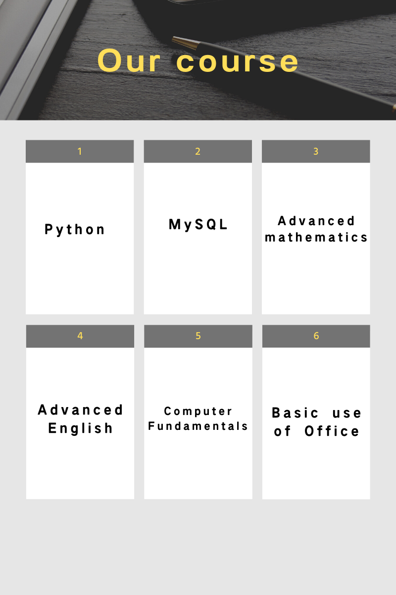

Our training facility will include the following courses:

Python: The Python course will teach students basic Python language and programming ideas, which will be the first step in learning programming
The schedule: Day 1-5: Python Basics.
Day 6-20: Python statements.
Day 21-30: Advanced Python tutorials.Course resources
MySQL: In this course students will learn the basics of databases and how to connect to a database using Python
The schedule: Day 1-5:MySQL Basic Tutorial
Day 6-20: MySQL statement
Day 21-30: The use of MySQLCourse resources
Advanced mathematics: This course aims to give students a better understanding of mathematics and operations
The schedule: Day 1-10: Equivalence relation.
Day 11-20: Quadratic reciprocity.
Day 21-30: Fundamentals of calculusCourse resources
Advanced English: The course is designed to broaden students' vocabulary
The schedule: Day 1-10: Basic Fundamental Functions of Computer
Day 11-20: English Reading
Day 21-30:English listening, speaking, Reading and writingCourse resources
Computer Fundamentals: Basic knowledge of computer is very important, whether in study or in daily life, these knowledge can be used everywhere
The schedule: Day 1-10: Equivalence relation.
Day 11-20: Different Types of Computer
Day 21-30: Computer Software and Hardware
Basic use of Office: As the most commonly used software in the computer, Office should be studied more deeply to improve work efficiency
The schedule: Day 1-10: Basic learning of Microsoft Office
Day 11-20: Use of Microsoft office
Day 21-30: Microsoft Office advanced tutorialCourse resources